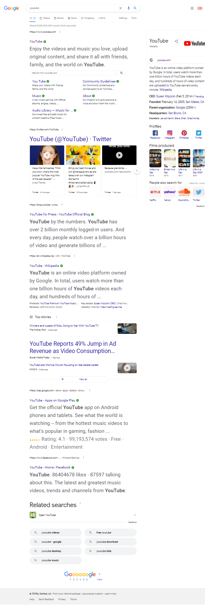

Visual Hierarchy
Google's visual hierarchy is one of the best I have ever seen. First, you see the logo and then the search bar. Under those are the search buttons at the top, and there are different options for a user's profile. It shows which things are most important to both the user and Google.
Google Search Rule of Thirds
Youtube
Youtube uses their Rules of Third on their videos by keeping all of their video content in columns of 3. The styling helps the elements of the website fit on the page better and looks clean and professional. The Rule of Thirds happens no matter which size of the viewport and makes things faster and simpler.
Youtube HomepageWhite Space and Clean Design
DNDBeyond
DNDBeyond uses white space correctly by using padding to keep the elements on the page from fighting over which one gets to have the screen. The creators made sure the right amount of space was in between each element, so there are no overlaps. The white space makes the website very organized and easy to follow.
DNDBeyond Homepage